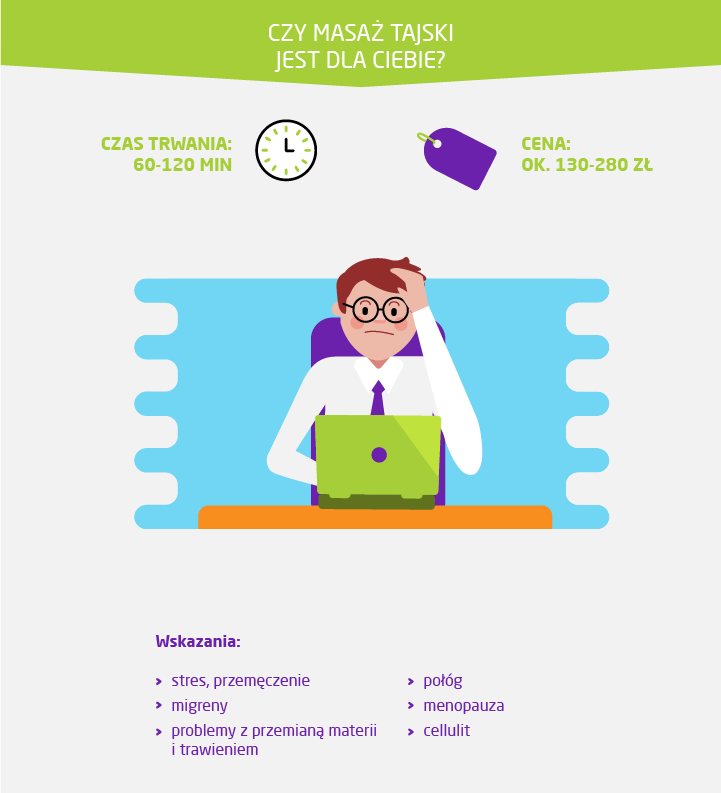

Marzysz o błogiej chwili tylko dla siebie? Może jesteś zmęczony, a wszystkie sposoby na odpoczynek nie działają? Wybierz się na masaż, by choć na chwilę się zatrzymać i oddać prawdziwemu relaksowi ciała i umysłu. Dowiedz się, jakie są zalety leczniczego dotyku i poznaj rodzaje oraz ceny masaży. Tak spędzona chwila tylko dla siebie może zdziałać cuda.
Wpływ masażu na organizm. Zalety masażu
Prawidłowo wykonany masaż wpływa pozytywnie na trzy obszary: poprawia zdrowie, psychikę i wygląd. Zazwyczaj sięgamy po to rozwiązanie, kiedy przytłacza nas stres, jesteśmy zmęczeni lub nie radzimy sobie z bólem. Zabieg wykonany przez specjalistę może przynieść nam jednak o wiele więcej korzyści.
Jak się przygotować do masażu
Celem masażu jest całkowity relaks, dlatego warto się do niego dobrze przygotować, aby nic nie przeszkadzało w odpoczynku. Przed wizytą u masażysty najlepiej zrób ciepłą kąpiel i peeling, dzięki którym składniki w olejkach głębiej wnikną w skórę, a ciało będzie rozluźnione i gotowe do zabiegu.
Wybierając się na masaż, zrezygnuj z biżuterii i makijażu. Najlepiej też zepnij lub zwiąż włosy na czubku głowy, aby nie narazić ich na pobrudzenie olejkiem oraz ułatwić pracę masażyście. Wybierz ubranie, które wygodnie będzie ci zdjąć, a po zabiegu będziesz się w nim czuć wygodnie. Przy wykonywaniu masażu całego ciała będziesz musiał się rozebrać. Weź pod uwagę to, że twoja bielizna może pobrudzić się kosmetykami. Możesz też skorzystać z tej jednorazowej, którą otrzymasz przed zabiegiem.
Przed masażem ważne jest również to, co jesz i pijesz. Głód lub uczucie ciężkości po posiłku mogą dekoncentrować i przeszkadzać w relaksie, dlatego ostatni posiłek zjedz najpóźniej na godzinę przed wizytą. Wybierz coś odżywczego, ale lekkiego. W tym czasie wypij również szklankę niegazowanej wody mineralnej. Nie pij alkoholu, unikaj też kawy i herbaty, które niepotrzebnie pobudzą przed chwilą, która ma być twoim momentem wyciszenia. Szklankę wody powinieneś wypić również po skończonym masażu.
Po zabiegu prawdopodobnie zostaniesz też poproszony o pozostanie przez ok. 10 minut w pozycji leżącej. To czas potrzebny na powrót twojego ciała i umysłu do równowagi. Nie wstawaj zbyt szybko, nie spiesz się. Daj sobie jeszcze chwilę na oddech i relaks, aby utrzymać stan spokoju na dłużej.
Ile kosztuje wizyta u masażysty
Chociaż masaż wykonany w domu – zwłaszcza przez bliską osobę – jest przyjemny, lepiej poddać się w ręce profesjonalisty, który wie, jak prawidłowo go wykonać, aby był nie tylko skuteczny, ale też bezpieczny. Ile kosztuje tego typu zabieg? Cena zależy od miasta, konkretnego salonu, czasu trwania oraz wybranego obszaru. Najdroższy będzie specjalistyczny masaż całego ciała, trwający od 60 do 120 minut. Za różne jego odmiany zapłacimy ok. 100-300 zł. Krótki masaż wybranej partii ciała może kosztować ok. 30-80 zł.
Z usług masażysty możesz skorzystać nie tylko w salonach. Istnieje możliwość wykupienia opcji z dojazdem, za który zazwyczaj będziesz musiał dopłacić. Masażysta zapewnia potrzebny sprzęt oraz kosmetyki, po twojej stronie leży tylko zapewnienie odpowiedniego miejsca oraz ręczników do przykrycia.
W ofercie salonów masażu i prywatnych masażystów znajdziesz wiele różnych zabiegów wykonywanych klasycznymi lub nowatorskimi technikami. Sprawdź, jaki będzie najlepszy dla ciebie i ile kosztuje konkretny typ masażu.
Ile kosztuje masaż klasyczny
Masaż klasyczny to podstawowa i najbardziej popularna technika, wywodząca się ze starożytnych Chin i Indii. Polega na wykonywaniu konkretnych ruchów w odpowiedniej sekwencji. Masażysta stopniowo zwiększa siłę nacisku, działając kolejno na głębsze warstwy tkanki. Wykorzystuje w tym celu kolejno techniki: głaskania, rozcierania, ugniatania, ucisku, oklepywania, wibracji, roztrząsania i wałkowania. Te elementy są często wykorzystywane w innych rodzajach masażu, np. relaksacyjnym połączonym z aromaterapią. Masaż klasyczny działa nie tylko odprężająco, można go wykorzystywać również leczniczo przy zapaleniu mięśni, reumatyzmie czy bólach pleców. Jest pomocny, kiedy walczysz z nadwagą lub chcesz poprawić wygląd i jędrność skóry. Metoda ta jest uniwersalna, dlatego dobrze wybrać ją na pierwszy zabieg.
Podczas wizyty masażysta może wykonać masaż klasyczny całego ciała lub skupić się na konkretnej jego partii, np. tej, która uległa kontuzji. Za całościowy zabieg zapłacisz ok. 80-150 zł za godzinę. Wymasowanie pleców to koszt ok. 50-90 zł w zależności od czasu trwania. Za krótki, 15-minutowy masaż zapłacisz ok. 30 zł. Możesz również postarać się o skierowanie lekarskie na tego typu zabieg. Na bezpłatny masaż w ramach NFZ trzeba jednak zazwyczaj czekać bardzo długo.
Ile kosztuje masaż relaksacyjny
Masaż relaksacyjny jest często wykorzystywaną odmianą klasycznej wersji tego zabiegu. Wykorzystuje wiele z jej technik: głaskanie palcami lub całymi dłońmi, ugniatanie, rozcieranie i oklepywanie. Różnica polega na tym, że ruchy są wykonywane powoli, łagodnie i bardzo płynnie, a dodatkowymi bodźcami dla osoby masowanej są często zapachy, muzyka i oświetlenie. Podczas wykonywania masażu relaksacyjnego atmosfera jest szczególnie ważna. Celem jest całkowity relaks, uspokojenie, ukojenie. Nic nie powinno rozpraszać, dlatego masażysta przed przystąpieniem do masażu, zada ci kilka pytań, np. o ulubioną muzykę i zapach, który wykorzystywany jest podczas łączonej często z tym zabiegiem aromaterapii. Dowie się również, czy masz ochotę na relaks w ciszy, czy może potrzebujesz rozmowy.
Masaży relaksacyjnych możesz zażywać nawet codziennie. Są idealne dla osób przepracowanych, przemęczonych, zestresowanych, walczących z nerwobólami oraz w okresach spadku nastroju. Całościowy zabieg trwa około godziny i w połączeniu z aromaterapią kosztuje ok. 100-150 zł. Wymasowanie tą techniką karku i szyi to koszt ok. 50 zł za pół godziny.
Ile kosztuje masaż wyszczuplający i masaż bańką chińską
Właściwie każdy masaż działa na ciało i skórę ujędrniająco oraz może wspomagać kurację odchudzającą. Dlatego jeśli zastanawiasz się, jak pozbyć się cellulitu – dobrze trafiłaś. W ofercie salonów kosmetycznych znajdziesz zabiegi dedykowane problemowi nadwagi czy skórki pomarańczowej. Tego typu masaże mogą wykorzystywać techniki klasyczne, ale wykonywane przy nich ruchy są bardziej intensywne i mocniejsze, mogą nawet sprawiać dyskomfort lub ból. Często też używane są podczas nich różnego rodzaju przyrządy, mające dodatkowo pobudzić krążenie krwi i limfy.
Jednym z rodzajów masażu wyszczuplającego jest zabieg robiony przy użyciu silikonowych baniek. Wykonują go masażyści lub kosmetyczki. Polega na przesuwaniu po ciele – zazwyczaj biodrach, udach i pośladkach – baniek, które się na nim zasysają, wzmacniając efekty masażu, pobudzając krążenie i modelując sylwetkę. Zabieg kosztuje od ok. 50 zł za 30 minut.
Efekty przynosi również seria tzw. rollmasaży z wykorzystaniem specjalnego masażera obrotowego. Przy jego pomocy możemy wymasować sobie stopy, wewnętrzną i zewnętrzną stronę ud, pośladki, łydki, brzuch, plecy oraz ręce, działając na każdą partię ciała. Zabieg trwa około godziny, ponieważ każdy etap powinien trwać około 4 minut. Rollmasaż często oferowany jest w seriach po 10. Kosztuje ona wtedy około 120 zł.
Jeśli wolisz klasyczne metody, wybierz drenaż limfatyczny. Ta technika masażu ma pobudzić krew i limfę do szybszego krążenia, a w efekcie pomagać w pozbywaniu się tkanki tłuszczowej i cellulitu. Masażysta wykonuje dość mocne ruchy ku górze tak, aby rozmasować wszelkie zastoje i obrzęki oraz usunąć toksyny ze skóry. W zależności od salonu oraz czasu trwania może kosztować ok. 50-200 zł.
Pamiętaj, że przy tego typu zabiegach najważniejsza jest regularność. Najlepiej więc wykupić serię masaży, przy której w większości salonów otrzymasz zniżkę.
Masaż odmładzający i liftingujący, czyli ile kosztuje masaż twarzy
Wystarczy 20-30 minut, aby twarz, szyja i dekolt nabrały blasku. Dzięki wprawnym ruchom głaszczącym, rozcierającym, ugniatającym, oszczypującym, modelującym i liftingującym skóra będzie dotleniona, lepiej ukrwiona, poprawi się jej elastyczność i napięcie, zmniejszą opuchnięcia. Regularne masaże to skuteczny sposób na nieinwazyjne wygładzenie zmarszczek i złagodzenie rysów. Zabieg wykonywany jest na bazie kremu, olejków lub ampułki ze skoncentrowanymi składnikami. Kosztuje od ok. 40 do 80 zł w zależności od doboru kosmetyku.
Masaży twarzy nie powinny jednak wybierać osoby ze stanami zapalnymi i zmianami alergicznymi skóry, zapaleniem migdałków, guzkami w węzłach chłonnych, gorączką, nadczynnością tarczycy, po usunięciu zęba oraz nadciśnieniem.
Masaż gorącymi kamieniami, czyli masaż na rozluźnienie mięśni
Do masażu kamieniami wykorzystuje się ogrzany do około 50° czarny bazalt oraz chłodny marmur. Kamienie te pochodzą z wód oceanu, którym zawdzięczają gładką, przyjemną fakturę. Muszą być przechowywane w soli morskiej lub wodzie źródlanej, aby zachowały swoje cenne właściwości. Bazalt ma za zadanie poprawić krążenie krwi, dotlenić skórę i odżywić organizm. Marmur orzeźwia i chłodzi. Podczas zabiegu masażysta układa kamienie zgodnie z pochodzącą z medycyny chińskiej i indyjskiej mapą czakr, czyli punktów przepływu energii. Znajdują się one m.in. wzdłuż kręgosłupa, między palcami i na twarzy. Następnie masuje ciało przy pomocy bazaltu, marmuru i olejków. Masaż jest bardzo przyjemny i odprężający. Podczas niego organizm odpoczywa i pozbywa się toksyn. Zabieg trwa ok. 1,5-2 godziny i kosztuje ok. 120-250 zł.
Na czym polega i ile kosztuje masaż tajski i shiatsu
Szczególnym rodzajem tego typu zabiegu jest tradycyjny masaż tajski, który można nazwać prawdziwym rytuałem. Wywodzi się z medycyny ajurwedyjskiej, czerpie z jogi, akupresury, refleksologii, rozciągania, wiedzy o czakrach oraz medytacji. Uznawany jest za masaż głęboki, intensywny, ale też oddziałujący jednocześnie na ciało, umysł i nastrój. Bazuje na ruchach uciskających kolejne partie ciała, a następnie rozciąganiu. Masaż wykonuje się bez użycia olejków i innych natłuszczających kosmetyków. Różni się od innych również tym, że nie wykorzystuje się specjalnego stołu do masażu, ale matę układa na materacu. Dzięki temu masażysta może wykorzystać nie tylko siłę swoich rąk, ale także stóp. Pełen masaż tajski trwa jedną lub dwie godziny i może kosztować od ok. 130 do nawet 280 zł.

Technikę ucisku stosuje się również podczas masażu shiatsu, który wywodzi się ze starożytnych Chin i Japonii. Jest on nazywany akupunkturą bez igieł oraz masażem punktowym. Polega na uciskaniu kolejnych partii ciała, w których znajdują się punkty przepływu energii. Masażysta wykorzystuje nacisk swoich dłoni, palców, łokci i stóp. Podobnie jak podczas zabiegu tajskiego, nie używa się żadnych olejków. Prawidłowy dotyk jest dość mocny, ale nie nieprzyjemny. Rozluźnia napięte mięśnie i dodaje energii. Za godzinny masaż shiatsu zapłacisz ok. 150-180 zł, a za dwugodzinny ok. 250-280 zł.
Masaż – przeciwwskazania
Źle wykonany masaż może zaszkodzić, dlatego zawsze należy korzystać z usług specjalistów oraz sprawdzić, czy nie ma przeciwwskazań do tego typu zabiegów. Podczas wstępnego wywiadu powinieneś zostać zapytany o choroby, które mogą uniemożliwić wykonanie masażu. Zrezygnuj, jeśli masz podwyższoną temperaturę, stan zapalny, zapalenie mięśni i stawów, osteoporozę czy choroby skórne. Masowanie nie jest wskazane także wtedy, kiedy masz nadciśnienie, nowotwór, chorobę wrzodową, choroby serca, stany zapalne jelit i trzustki, kamicę nerkową i żółciową. Kobiety nie powinny korzystać z tego typu zabiegów podczas menstruacji oraz w okresie ciąży. Jeśli masz jakiekolwiek wątpliwości, zapytaj lekarza lub doświadczonego masażysty.